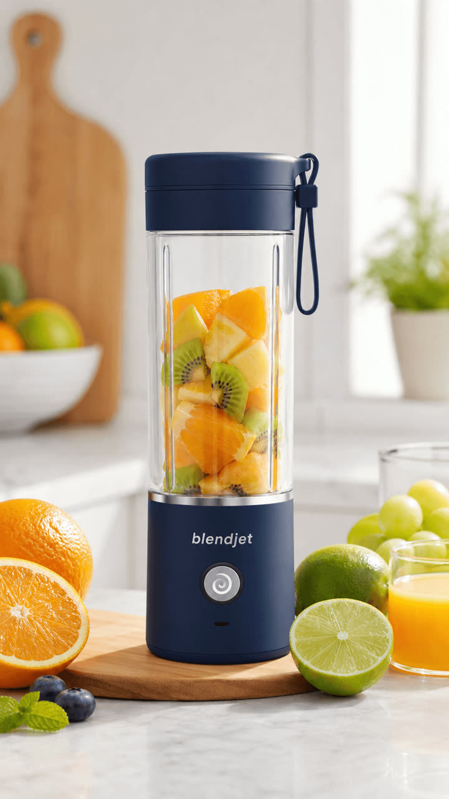
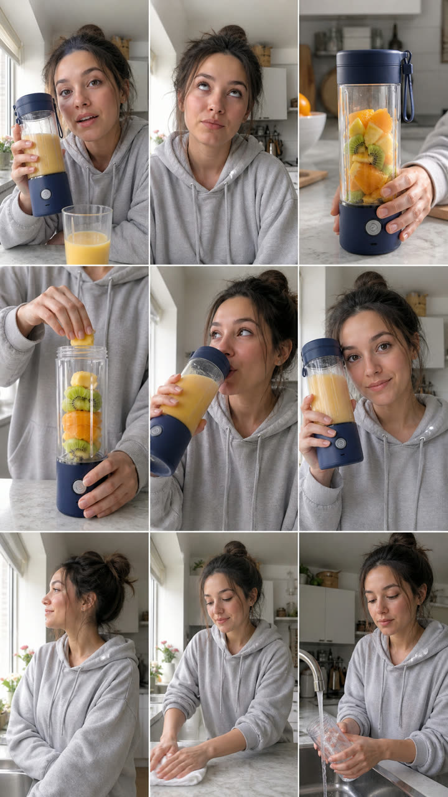
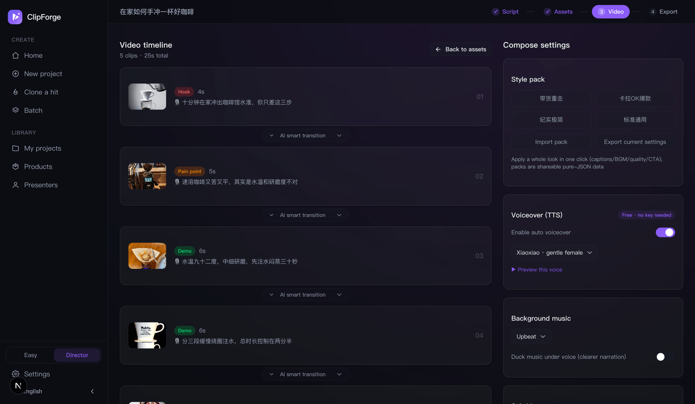
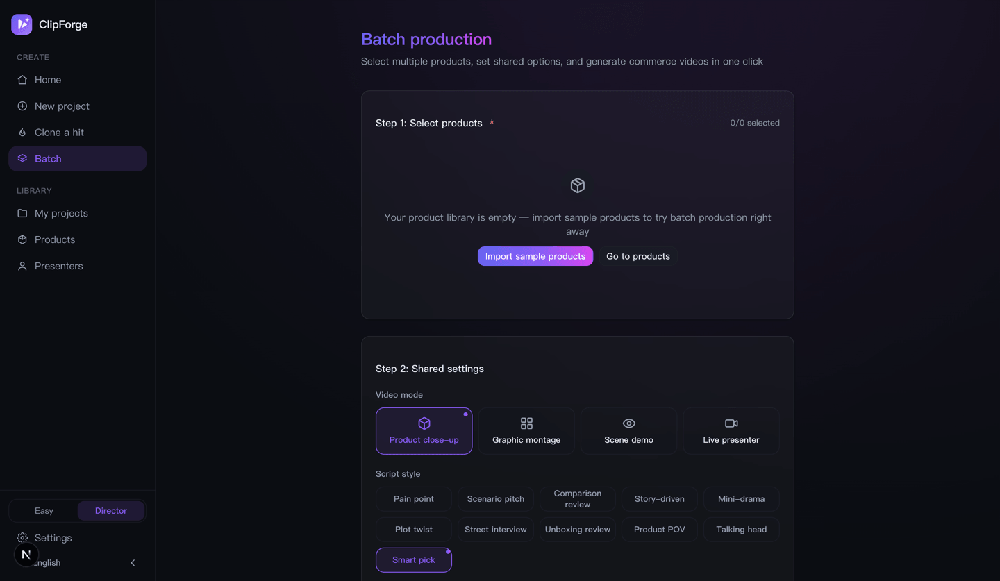

Open source · No watermark · Full videos with zero AI keys
One product photo, videos that sell
Upload a product photo or paste a product link. AI extracts selling points, writes mini-drama and talking-head scripts, keeps your product photo-faithful, adds real moving shots + voiceover + captions + BGM — ready for TikTok Shop, Reels, Shorts, Douyin, Kuaishou and Xiaohongshu.
Open source AGPL-3.0 · data stays on your machine · Docker self-hosting · built-in MCP + CLI — one sentence in Claude / Cursor


↓ the films below
↑ The input is just one product photo — script, storyboard, visuals and voice are all generated (real products, Seedance 2.5, tap 🔇 for audio). The judge panel tears up the draft lines first; the left film is a "storyboard grid → one-tap full film" run: hook, pour, sip and box-reveal — 4 shots cut natively in a single generation. The other two come from the coffee product photo through the same pipeline.
Three steps to a publish-ready video
Drop the product in, pick a path
Upload a product photo, paste a product URL (title / price / images auto-extracted) or type a topic; then choose: 🆓 Free quick cut ($0 end to end, ~2 min) or ✨ AI-generated film — the per-second cost is printed right on the option, billed to your own model key.
Read the script before spending
AI writes the voice-over across ten styles in four forms (mini-drama / talking head / unboxing…). The free path runs straight through; the AI path stops at "Script ready" — one confirmed click is the only paid moment, and the judge panel can tear the lines apart first.
Hands-off to the finished video
Free path: real stock visuals + free voice-over + local compose. AI path: grid-locked storyboard → one Seedance 2.5 call with native cuts and lines spoken aloud. Toggle 9:16 / 3:4 and copy the caption pack — ready to post.
Every make-or-break for commerce video,
built as an exclusive capability
Real moving shots, not a slideshow
The image-to-video quality path: a motion-prompt engine locks the product, keyframe chaining generates transitions inside the clip so cuts are seamless; camera intensity switches soft / mid / bold, and an unsatisfying shot can be re-run keeping its keyframe — verified with real A/B calls, the product never warps or drifts.
Product fidelity
Image-to-image locks your original product — backgrounds and lighting change, the product itself never does.
Mini-drama selling
Ten script styles: mini-drama / plot twist / street interview… a free voice per character; built-in ordinary-person presenters + a real-face constraint, so on-camera humans never look AI-fake.
A full video at $0
Free stock + free AI voiceover + free BGM + local compositing. The local material library adds your own images and videos, searchable names and tags, and project-only shot filling.
Two-mode workspace
Easy mode: script → finished video, fully hands-off — no storyboard, no jargon. Flip to Director mode for per-shot editing, the director desk, camera presets and the grid. One sidebar, everything findable.
Production console: know the cost first
Orchestrate nine stages in one Director view, estimate cost ranges and time from the live model catalog, then route for cost / speed / quality / consistency. Versions, failures, and recovery actions stay beside the plan.
Visual memory + per-shot quality gate
Keyframes, character sheets, product images, and previous tails adapt into the strongest reference plan each model accepts, with native dialogue, lip sync, and ambience where supported. Every take keeps its actual strategy; only a human-accepted candidate enters compose.
One bad second, not a whole retake
QC evidence becomes a precise repair window with optional timed identity or product anchors. Review billed duration, price, and fallbacks first; only the bad segment is generated and spliced back while source audio and earlier takes stay intact.
Evidence at every cut, versioned masters
Inspect exposure, color, and saturation on both sides of real splice points, alongside whole-film loudness. Analysis is read-only; two-pass loudness or deflicker runs only when selected and saves a new version.
Find clips, correct captions, export in batches
Find spoken phrases, name multiple clips, preview and export them as a batch. Search long transcripts, correct product names, track progress, cancel and retry interrupted renders. Sources and earlier versions stay intact.
Preview framing, then export
Pin a finished version, choose blurred background, full-frame padding or positioned crop, and preview the actual frame before exporting to multiple platforms. Track progress with persistent recovery alerts and retry controls.
Free / AI fork, one paid click
Choose at creation: a free quick cut at $0, or an AI-generated film with the per-second cost printed on the option. The script is free either way — money moves only after you read it and click once. Open-source BYOK: usage bills your own model platform.
Compliance built in
AIGC labeling, pre-publish throttle self-check and an ad-law banned-term scan with rewrite hints — it ships compliant by default.
Agent-native + batch
MCP + CLI + agent Skill: paste a product link in Claude / Cursor and get a video; batch-render 10 products and A/B the cuts.
Judge panel → grid → one-tap film
Before generation costs a cent, four bad-tempered judges tear the lines apart with length-preserving rewrites; the storyboard grid locks person and scene in one generation, and its keyframes ride Seedance 2.5 into a one-tap full film — native cuts, lines spoken verbatim (that's the hero demo).
Presenter library · multi-view sheets
Build multiple presenter personas and generate a front / side / back / close-up reference sheet in one shot (physically the same person); the grid and film passes anchor to it — the same face across shots and across videos.
What to post today · daily machine
Live trend picks filterable by category — tap one to render, or remix a viral straight from a trend; a persona picker plus a cron recipe makes a hands-free daily machine; 391 ad templates recommended per product, AI-customizable and shareable.
Real UI, not mockups




Outsourcing & other tools vs ClipForge
| Stage | ClipForge | Traditional outsourcing |
|---|---|---|
| Scriptwriting | AI writes 3 scripts in 30s | Director, 1–2 hours |
| Asset creation | AI images / moving shots + free stock, minutes | Shoot + retouch, 1–3 days |
| Editing | Auto compositing + transitions + captions + voiceover | Editor, 2–4 hours |
| Multi-platform | One-click TikTok / Reels / Shorts / Douyin export | Manual ratio / captions |
| Compliance | AIGC label + self-check + banned-term scan, default on | Human memory, miss = throttled |
| Cost | $0 on the free path, no watermark | Hundreds per video |
| What you care about | ClipForge | Traditional OSS stitchers | Commercial AI video SaaS | Manual-first editors |
|---|---|---|---|---|
| Photo-faithful product | ✅ image lock | ❌ stock only, product absent | ⚠️ partial | ➖ manual |
| Moving-shot quality | ✅ i2v + seamless transitions | ❌ stills stitched | ✅ mostly i2v | ➖ your footage |
| Mini-drama + multi-voice | ✅ ten styles, voice per character | ❌ single narrator | ⚠️ avatar talking-heads | ❌ manual |
| China-platform compliance | ✅ default on | ❌ | ❌ overseas-focused | ⚠️ partial |
| $0 + no watermark + local | ✅ open source, self-hosted | ✅ | ❌ paid / cloud / watermark | ⚠️ paid pro, cloud |
Based on public materials as of 2026-07; features evolve. ClipForge is unaffiliated with all products above — for evaluation only.
Frequently asked
Is ClipForge free?
Yes. Open source (AGPL-3.0), no watermark, unlimited videos. Free stock assets + free Microsoft Edge TTS voiceover + free BGM + local FFmpeg compositing — a full video with zero AI keys. Bring your own key for premium visuals (30+ models: GPT Image 2, Seedance 2.0, Kling 3.0…).
Will it distort my product photo?
No — this is the core guarantee: image-to-image locks the original product, so backgrounds and lighting change but the product itself never does. What buyers see is what they get.
Will the video look like an AI slideshow?
No. With a video model configured, every shot becomes a real moving clip via image-to-video: a motion-prompt engine keeps the product locked, keyframe chaining generates transitions inside the clip so cuts are seamless, camera intensity is adjustable, and any single shot can be re-run without touching the rest. The demos at the top of this page are raw Seedance 2.0 output.
How is it different from traditional OSS stitchers, commercial SaaS, or manual editors?
Traditional open-source tools mostly stitch keyword-matched stock stills where your product never appears; commercial SaaS charges per video, uploads assets to the cloud and watermarks free tiers; manual editors require shot-by-shot work. ClipForge is free and open source with no watermark, photo-faithful products, real moving shots, mini-drama multi-voice dialogue, and compliance built in — all local. See the comparison table above.
Do I need to appear on camera?
No. Videos are composed from your product photo, AI visuals, free voiceover and captions — fully faceless. One person can ship dozens of videos a day.
Which platforms does it export for?
TikTok Shop / Reels / Shorts 9:16, Xiaohongshu 3:4, Douyin, Kuaishou and WeChat Channels — one-click format switching, plus auto-generated hashtags, cover copy and engagement prompts.
How do I run it?
Two ways: download the Windows / macOS desktop app, or self-host the open-source Next.js web app (Docker supported). It also ships an MCP server, a CLI and an agent skill, so Claude or Cursor can produce a video from a product link in one sentence. Step-by-step setup lives in the User Guide, with a fuller click-by-click walkthrough in the beginner tutorial.
I've never edited a video — can I use it?
Yes, that's the default experience. Easy mode has exactly one path: drop a product photo → skim the script → land on the finished video, all behind one progress card. Switch to Director mode only when you want per-shot control.
How much does an AI-generated video cost?
The free quick cut is $0 end to end. The AI film bills your own model key by the second — roughly $1–5 for a 12–15s video depending on the model tier — with the price printed on the option and exactly one confirmed click before any spend. ClipForge itself stays free and open source.
Your next best-seller
starts with one product photo
Free · open source · no watermark — full videos with zero AI keys.